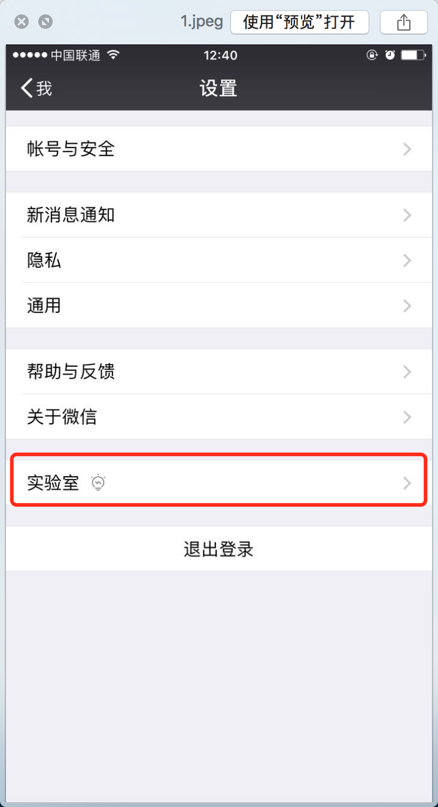
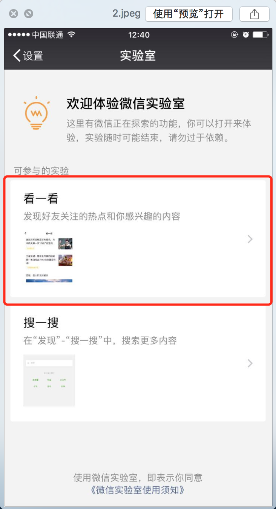
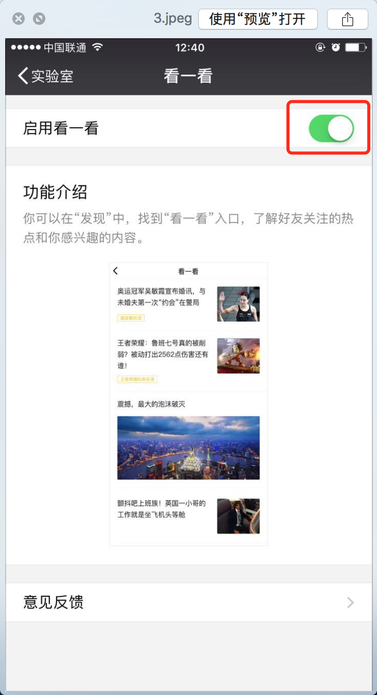
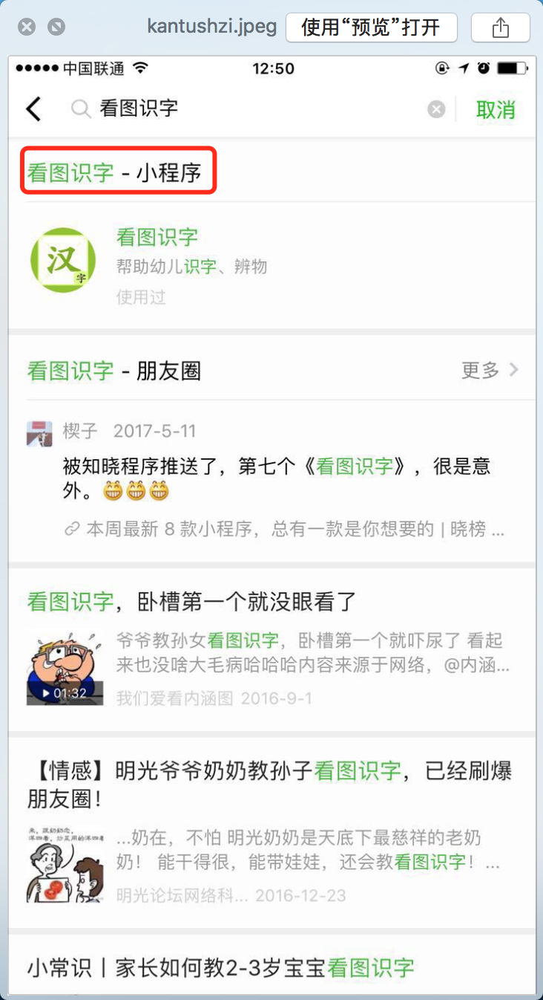
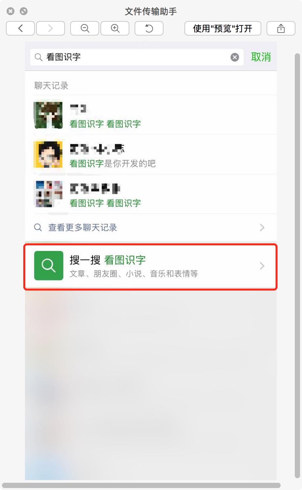
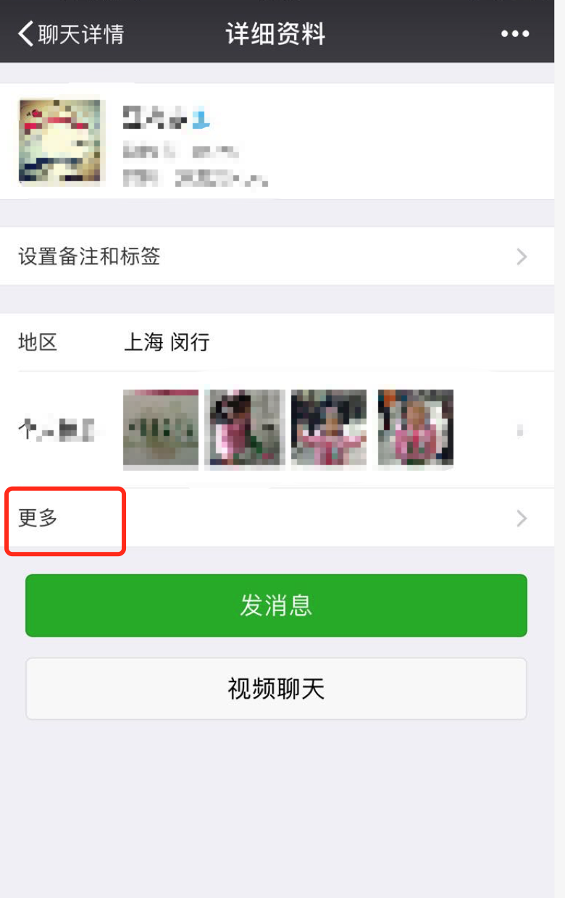
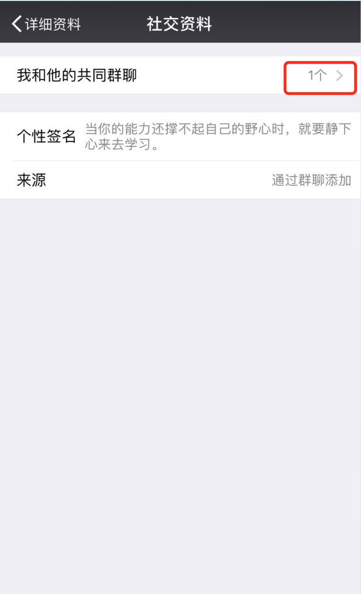
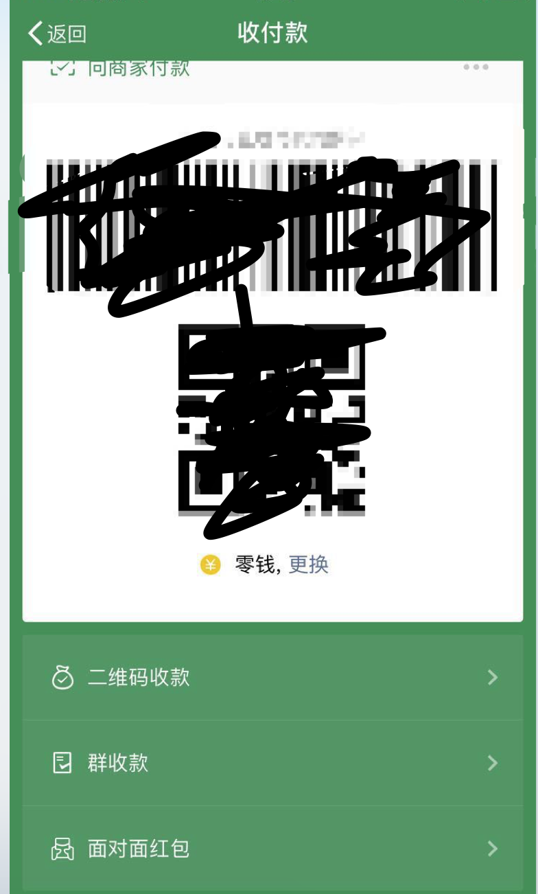
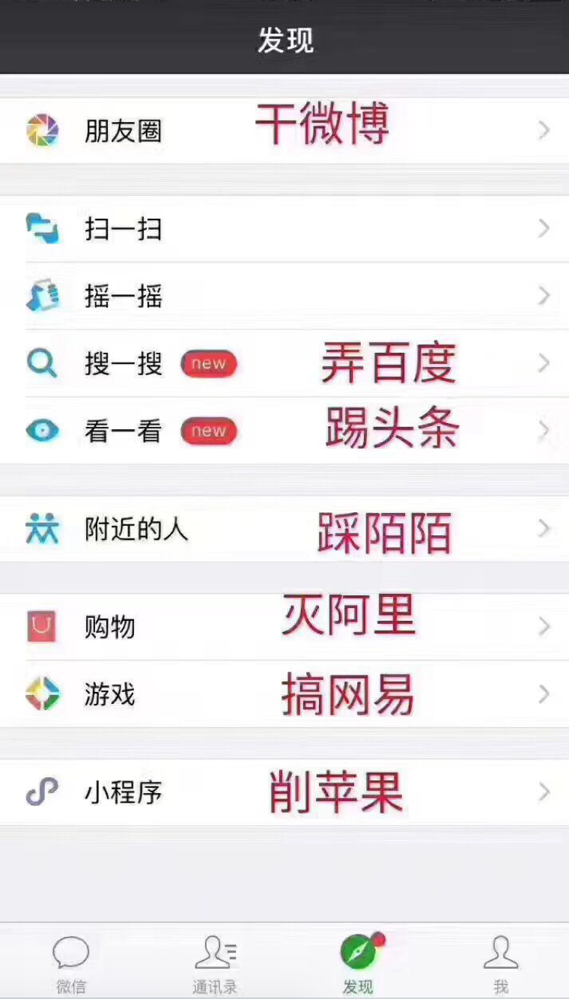

微信昨天更新了一个版本，功能如下：
- 可在微信实验室体验正在探索的功能
- 聊天中查找聊天内容时，可以查找文件、图片、链接
- 群主可在群成员信息页中，了解对方是如何加入群聊的
- 选择图片时，可便捷地调整并预览已选择的内容
从上面列出的点，对普通用户 1 和 4 还是值得关注的。
开启实验室功能
按照如下顺序开启：



搜一搜
其中的搜索功能本来就有，这次把它换到了一个更明显的地方。表面看着是换了一个地方，在我体验之后搜索结果还是不同的，从发现页面进入搜索可以搜出小程序：

不过从下面图也可以进入，聊天页面的搜索可以看成是一个简化版的搜索：

搜索功能不仅仅搜索微信下产生的内容，还可以搜索别的平台下的，甚至说可以是全网（微信搞事情，百度吓尿了么？）。
看一看
大概看了下里面的内容，应该都是公众号（关注或未关注）里产生的东西。现在不知道里面的推送逻辑，应该是依据好友和自己关注的公众号来推送的。
发朋友圈可调整图片
新增了发朋友圈可以长按图片来调整顺序，这个功能还是挺实用的。对那些发有顺序规律的图片还是挺好的。同时还可以同步到QQ空间、facebook、twitter，基本可以做到IFTTT（if this then that）的功能。
版本更新为提到的和微调的功能：
文章置顶
以前未看完的文章可以置顶，同时退到聊天界面，这次我体验下来发现做了微调，置顶之后没有退到聊天界面。感觉不大方便了！
共同群聊
在好友界面下有个 更多，点击可以进入可以看到和好友的共同群聊，这又什么用呢？除了给你一声惊叹，哇，他居然也在那个群里，同时还有一个有用的就是可以找回没有保存到通讯录的群聊。


收付款
收付款的界面也变了，收款、付款、群收款以及面对面红包被整合到同一个页面中。

借图一张

颤抖吧!
以上就是我的使用体验和总结。